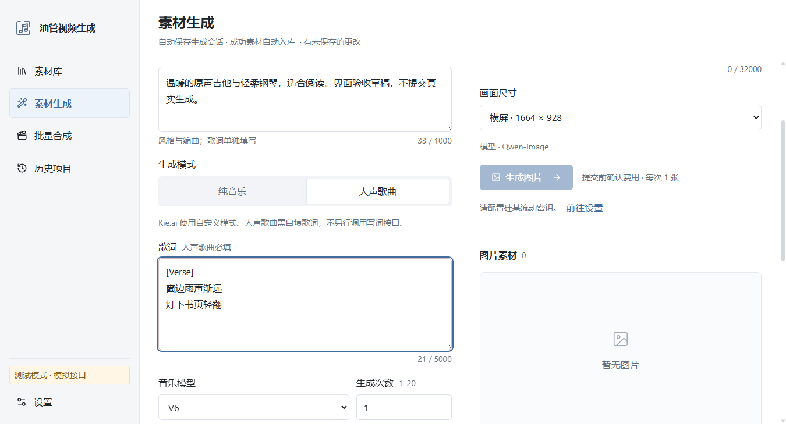
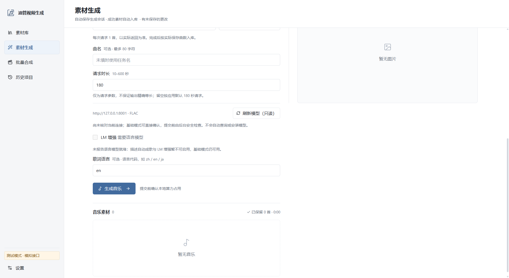
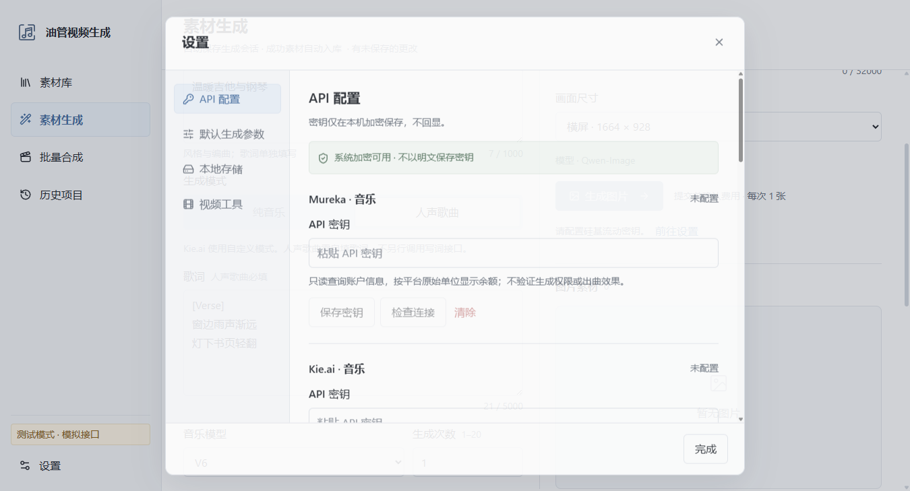
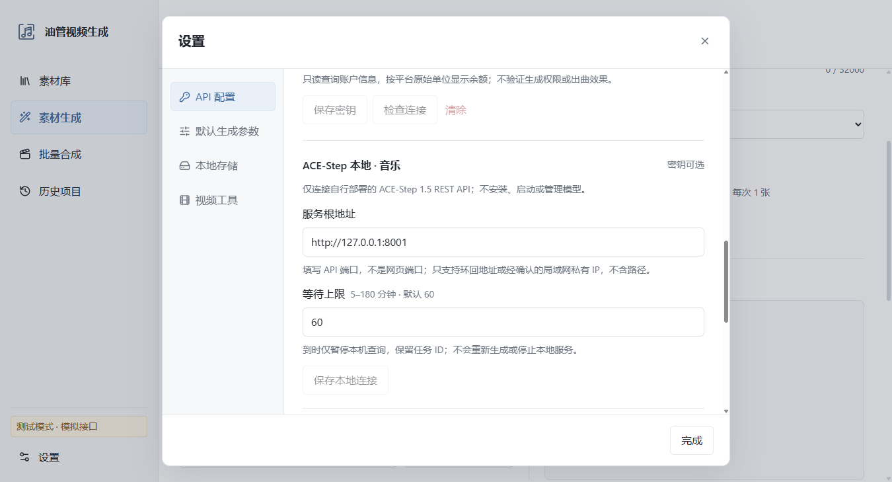
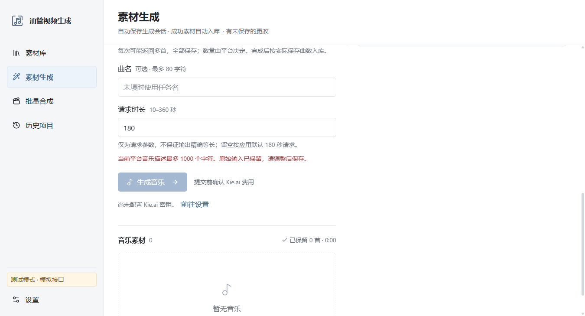
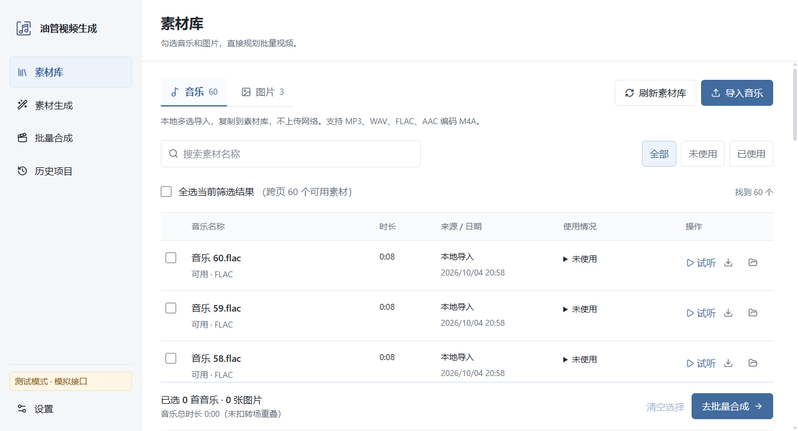
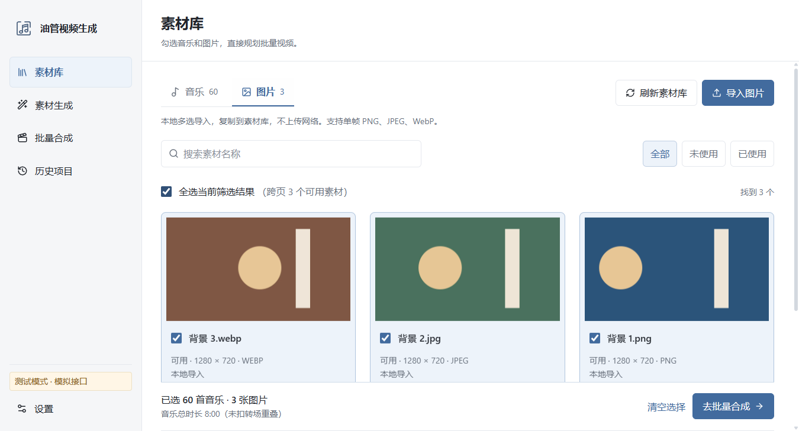
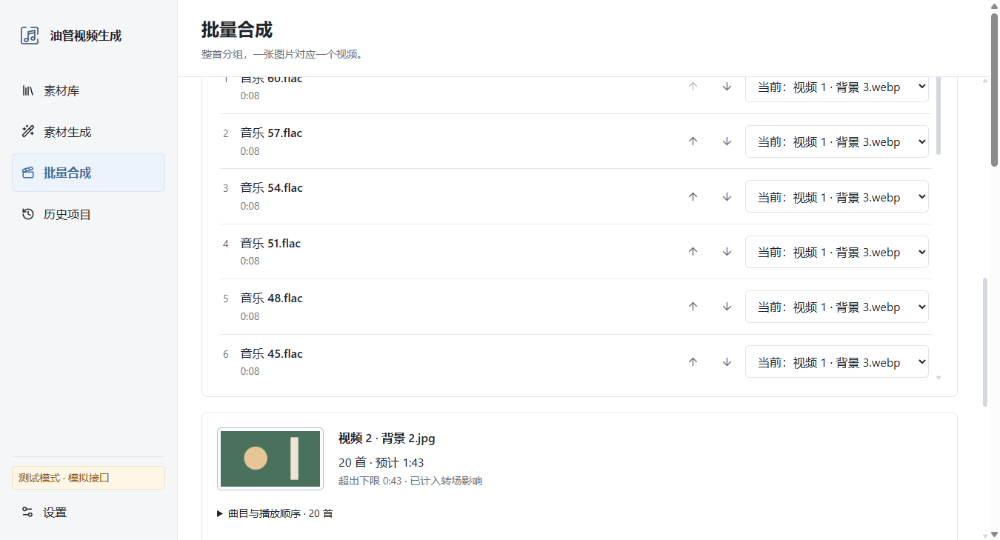
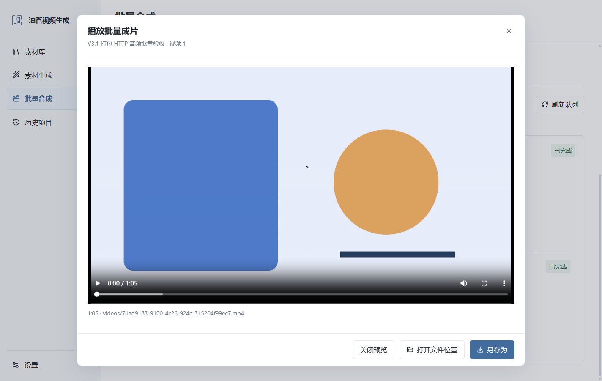

油管视频生成 V3.1
实际 Electron 窗口截图，已检查 1366×768 与 1920×1080。音乐新增 Kie.ai、reAPI、Sunor、ACE-Step；Mureka、硅基流动图片和整首批量合成保留。画面中的素材为人工测试内容，不代表 AI 生成质量；真实 ACE-Step 神经推理尚未实测。
两栏生成器：平台模型、风格描述与独立歌词

ACE-Step：基础模式、模型刷新与 LM 能力提示

本地生成单独确认算力占用
独立云端 Key，加密保存

本地根地址、可选 Key 与等待上限

长输入明确报错，不静默截断

全局音乐库与使用记录

图片分类、勾选与预览

整首规划：全部且仅分配一次

打包版：本地 HTTP 音频到 1080p 成片

真实 TCP、真实解码、整首合成、播放、另存为及重启使用记录均通过；音频为人工夹具，不是神经模型推理实测。
V3.0 的三条 60:43 长视频验收和旧截图均保留；V3.1 使用短批量回归，不将旧长测冒充本版重新执行。